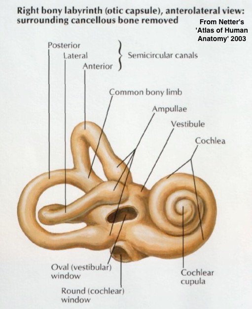

The Anatomy of the Vestibular System
How do we sense rotation?
How do we sense head position?
How do we sense linear acceleration?
Balance and Orientation beyond the Vestibular System
Symptoms of Vestibular Disorders
This could be a whole quarter
Instead, it’s 45 minutes
We’ll just hit the high points


By © Nevit Dilmen, CC BY-SA 3.0, https://commons.wikimedia.org/w/index.php?curid=45700841

These detect rotational motion
Three loops (‘Superior’, ‘Posterior’, and ‘Horizontal’)
Filled with endolymph
Each canal has an ampulla
Within it is the crista ampullaris
This is a mass of stereocilia with a gelatinous ‘cupula’ on top
The cupula has a very specific density, so it’s neutrally buoyant within the endolymph

Sense horizontal (utricle) and vertical (utricule) acceleration and static tilt
A ‘bed’ of hair cells with the ‘otolithic membrane’ on top
On the otolithic membrane are otoliths
Also known as “otoconia” and “statoliths”
Little crystals of Calcium Carbonate


One canal doesn’t give enough information
If you can detect rotation on each, you have a 3D model
… but how do we detect the rotation?
… but not at the same time
Fluids have inertia in tubes
To detect rotation, just detect the fluid moving in the ear!
The Cupula is a gelatinous ‘sail’ on top of the stereocilia
When the fluid moves, it pushes the cupula
When the cupula moves, the stereocilia are deflected
Movement opens of hair cell tip links
Ion Concentrations inside the cell change
The cell depolarizes, and the nerve firing rates increase

Opposite ‘ears’ provide opposite effects
Fluid motions are reversed because the orientation is reversed
“Right is discharging more, left is discharging less”
Rotation is not orientation
We also need to be able to sense acceleration
Maybe you’ve noticed it
That force that makes things accelerate towards the Earth at around 9.8 m/s/s
We can use this for positional reckoning
“Huh, when I stick my arm out it, it’s wanting to move that way”
Similar sensations are available to the legs, and head too!
“Let’s use streocilia to detect the pull of gravity!”
The Utricle and Saccule have beds of stereocilia positioned on the vertical and horizontal planes
The stereocilia should bend towards gravity
The Otoliths are little tiny ear rocks (‘otoliths’)
They’re attached to the membrane atop the stereocilia
Literally their only role is to be a bit heavy
Changes in position cause gravity to pull on the otoliths differently
In the utricle, neutral vertical head position produces a baseline
Leaning one direction, gravity bends the stereocilia, opening tip links, depolarizing and firing
Leaning the other way, gravity bends the stereocilia the other way, closing tip links and hyperpolarizing
Head position is interpretable from the combination of activation states of the utricule and saccule
(Meaningful) data only comes from the Cristae when there’s rotation
We are constantly getting orientation data from the utricle and saccule
You never don’t know which way is up!
… but rotation’s not the only kind of movement that we care about
Movement around the axis of a semicircular canal produces endolymph flow
But linear movement doesn’t
How do we detect linear movement?

… but they can detect other acceleration at the same time
Both in strength of movement and in directionality
“Both the Utricle and the Saccule are firing? We must be accelerating on two axes!”
This allows us to sense vertical and horizontal acceleration!
The human brain is amazing at integrating matrices of sensory information
The vestibular system provides useful data, but it’s not the only data
“Huh, when I relax my arm, it goes that way”
“One side of my neck is extended, the other side is compacted”
“I’m abruptly feeling greater weight on my feet without moving any part of my body”
“My clothes are tight against me here, and draped away there”
“Which direction is the horizon going?”
“Hmm, I don’t think that tree and the ground it’s on are actually rotating in space”
“Huh, I moved my head and the whole world turned. Am I a wizard?”
‘Motion sickness’ comes from vestibular and proprioceptive registration of motion without visual motion
“VR nausea” can come from visual registration of motion without vestibular or tactile
When the vestibular system is giving bad information, we have a big problem!
Because lots of normal reflexes rely on it!
Speaking of which…
Our vestibular system interacts with our visual senses
When the head moves, the vestibular system feeds motion commands directly to the eyes
“Move with me if you want to remain fixated on a distinct point”
When the vestibular system is working poorly, this causes Nystagmus!
Which is both indicative, and annoying
Causes visual disruption and is not pleasant
Difficulty registering absolute position
Falling and tipping
Dizziness with rotation
Often accompanied by nystagumus

Vertigo and balance issues make for a difficult life
We can manage the causes sometimes with medication
In some severe cases, the vestibular system is disabled
… and it’s unusual that it has troubles
The vestibular system helps us sense rotation, position, and linear forces
The semicircular canals handle rotation
The utricle and saccule handle position and linear acceleration
The body uses more than just the vestibular system to do balance
… but we sure want the vestibular system to be working properly!